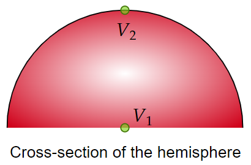
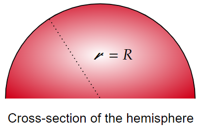

An inverted hemispherical bowl of radius $R $ carries a uniform surface charge density $\sigma $. Find the potential difference between the "north pole" and the center.
Answer
\[\frac{R\sigma }{2\epsilon _0} \left( \sqrt{2}-1 \right) \]We are interested in the difference of the potential between two points. As such, we should only worry about the potential at those points rather than everywhere. To find the potential at a given point, let's use:
\[V(\mathbf{r})=\frac{1}{4\pi \epsilon _0 }\int \frac{\sigma }{\mathcal{R} }da \] The potential at the center (origin) is straightforward, since $\mathcal{R} =R $, a constant value.
 \begin{align*} V_1 &= \frac{1}{4\pi \epsilon _0 }\int \frac{\sigma }{R}da \\ &= \frac{1}{4\pi \epsilon _0 }\int_{\phi =0}^{2\pi } \int_{\theta =0}^{\pi /2} \frac{\sigma }{R}(R^2 \sin \left( \theta \right) )d\theta d\phi \\ &= \frac{R\sigma }{2\epsilon _0 } \end{align*}The potential at the "north pole" will take a bit more work. The distance from the north pole to some infinitesimal charge won't be constant across the surface of interest. Consider the following simulation:
It is clear that we can use the law of cosines to write:
\begin{align*} \mathcal{R} &= \sqrt{R^2 +R^2 -2RR\cos \left( \theta \right) } \\ &= R\sqrt{2}\sqrt{1-\cos \left( \theta \right) } \end{align*}With this, we can now calculate $V_2 $:
\begin{align*} V_2 &= \frac{1}{4\pi \epsilon _0 }\int \frac{\sigma }{\mathcal{R} }da \\ &= \frac{1}{4\pi \epsilon _0 }\int_{\phi =0}^{2\pi } \int_{\theta =0}^{\pi /2} \frac{\sigma }{R\sqrt{2}\sqrt{1-\cos \left( \theta \right) }}(R^2 \sin \left( \theta \right) )d\theta d\phi \\ &= \frac{\sigma R}{\sqrt{2} 4\pi \epsilon _0 }2\pi \int_{\theta =0}^{\pi /2} \frac{\sin \left( \theta \right) }{\sqrt{1-\cos \left( \theta \right) }}d\theta \\ &= \frac{R\sigma }{\sqrt{2}\epsilon _0 } \end{align*}Thus, the potential difference between the "north pole" and the center is:
\begin{align*} \Delta V &= V_2 -V_1 \\ &= \frac{R\sigma }{\sqrt{2}\epsilon _0 }- \frac{R\sigma }{2\epsilon _0 }\\ &= \frac{R\sigma }{2\epsilon _0 } \left( \sqrt{2}-1 \right) \end{align*}